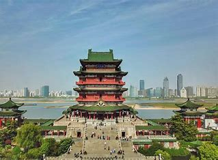

简介
滕王阁位于江西省南昌市东湖区沿江路，地处赣江东岸、赣江与抚河故道交汇处，是南昌市的地标性建筑和豫章古文明的象征。 始建于唐永徽四年（653年），由唐太宗李世民之弟滕王李元婴任江南洪州都督时所修。现存建筑为1985年重建的景观。
滕王阁因初唐诗人王勃所作《滕王阁序》而闻名于世，与湖南岳阳楼、湖北武汉黄鹤楼并称为“江南三大名楼”，是中国古代四大名楼之一，也是“中国十大历史文化名楼”之一，被誉为“西江第一楼”。

建筑特色
滕王阁主体建筑高57.5米，建筑面积13000平方米；其下部为象征古城墙的12米高台座，分为两级；台座以上的主阁取“明三暗七”格式，为三层带回廊仿宋式建筑，内部共有七层，分为三个明层、三个暗层及阁楼；正脊鸱吻为仿宋特制，高达3.5米。勾头、滴水均特制瓦当，勾头为“滕阁秋风”四字， 而滴水为“孤鹜”图案；台座之下，有南北相通的两个瓢形人工湖，北湖之上建有九曲风雨桥。
一级高台之上为二级高台（城墙台座），由高台登阁有三处入口，正东登石级经抱厦入阁，南北两面则由高低廊入阁。正东抱厦前，有青铜铸造的“八怪”宝鼎，鼎座用汉白玉打制， 鼎高2.5米左右，下部为三足古鼎，上部是一座攒尖宝顶圆亭式鼎盖。
荣誉
2004年，滕王阁旅游区被国务院批准列入第五批国家重点风景名胜区名单。
2018年10月29日，滕王阁旅游区被正式批准为国家AAAAA级旅游景区。